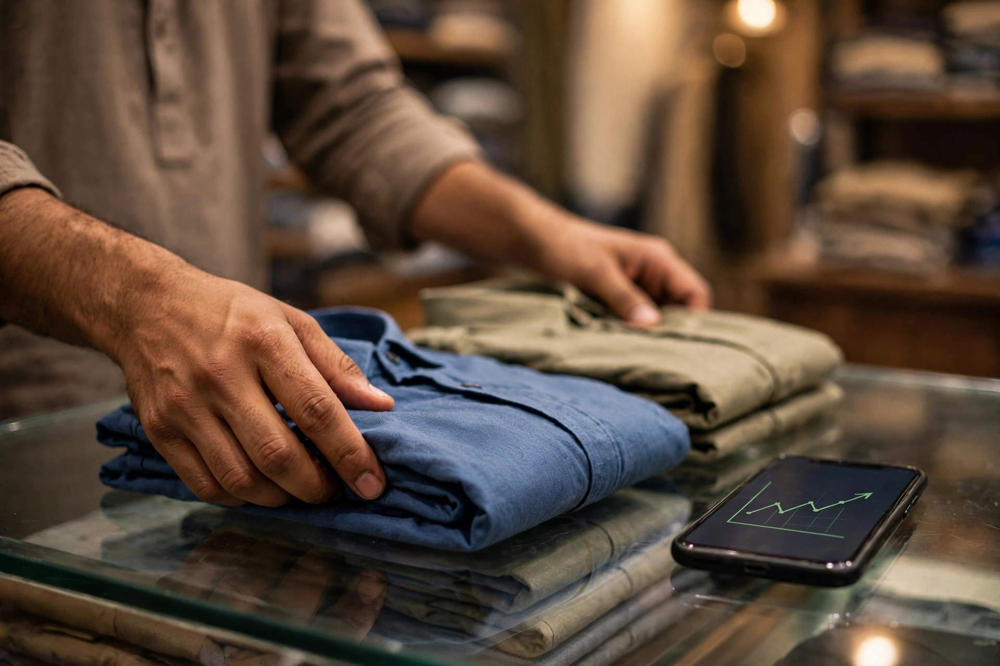
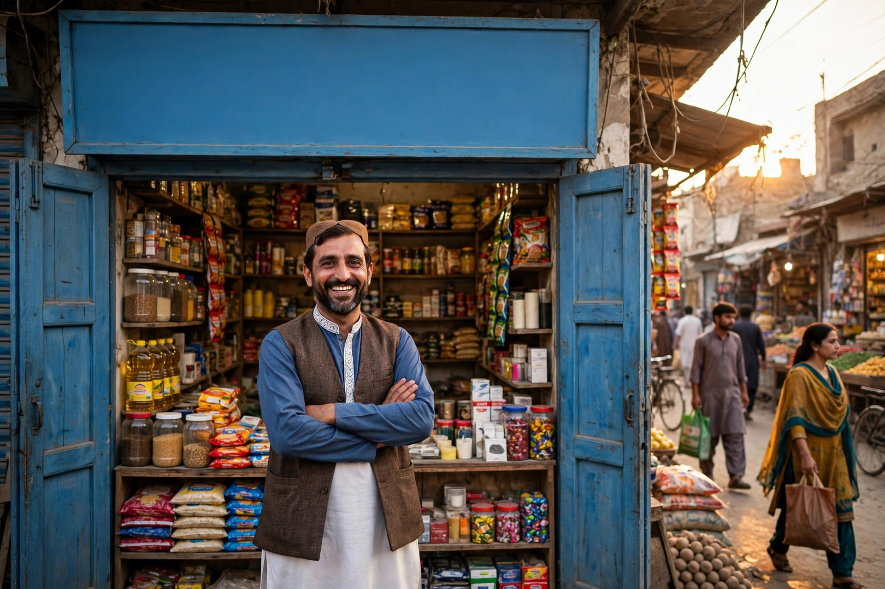

Every Layyah shopkeeper understands footfall: the right spot in the bazaar, a clear signboard and a good name in the town. Search engine optimization is the same thinking applied to the phone in every customer pocket. When someone searches for what you sell, your shop should be easy to find, easy to trust and easy to reach.
Retail in Layyah also has its own rhythm. Wedding seasons, Eid shopping, school opening months and harvest income all change what people buy and when. SEO done with that rhythm in mind keeps your shop visible at the exact moments demand rises.
How Layyah Shoppers Search Now
Few people browse the whole bazaar anymore without checking their phone first. They search for a product plus a place, look at which shops appear, compare reviews and hours, and then travel. Many searches end before a website is even opened, because the Google listing itself shows the phone number and directions.
That means a retailer has two shopfronts now: the physical one and the one on Google. Neglecting the second is like keeping your shutters half closed. Our overview of SEO for Layyah businesses explains the wider picture, while this article stays focused on shops and retail.

Your Google Listing Is Your Digital Signboard
Claim your Google Business Profile and treat it like a signboard you would happily hang over your shop. The business name must match your real name, the category must describe what you mainly sell, and the pin must drop customers at your door, not a street away.
Add your main product lines as services, upload clear photos of the shopfront and interior, and keep hours honest, especially during Ramadan and festival days when timings change. Shops that do this well are practising the basics of local SEO and Google Business Profile optimization, whether they use that term or not.
The Product Searches Most Shops Miss
Shop owners often assume customers search only for shop names. In reality, most searches are for products: school uniforms, wedding suits, mobile accessories, wedding cards, crockery sets. Each of those searches is a chance for your shop to appear if Google understands what you stock.
- List main product categories on your profile and website in plain words
- Add photos of real stock, labelled by what the photo actually shows
- Post short updates when seasonal stock arrives
- Answer common questions, like whether you stock a size or brand, on your listing
Choosing those words carefully is keyword work. The article on local keywords Layyah customers use shows how local shoppers actually phrase these searches.

A Simple Website That Helps the Shop
A shop website does not need to be large. A homepage, a page for each main product category, an about page and a contact page with a map is enough to start. Each category page should describe what you stock, who it suits and how to reach the shop, written in the words customers use.
The website and the Google listing must agree: same name, same phone number, same address. That consistency is part of the broader SEO services in Layyah offered by Zaheer Seo Expert, whose office is in Layyah itself, so shop owners can discuss their pages face to face if they wish.
Use Layyah Seasons Instead of Fighting Them
Retail demand in a farming district follows the land and the calendar. After harvests, families spend on weddings, home goods and clothing. Before Eid and school terms, specific searches jump. A shop that updates its listing and website a few weeks before these periods, with the right products and photos, meets customers at the moment of need.
Start with the free steps: claim the listing, fix the basics, add real photos and ask satisfied customers for reviews. Then build the small website and keep it truthful. Steady, honest visibility beats a burst of advertising that disappears the moment the budget ends.

A Monthly Routine a Shopkeeper Can Actually Keep
None of this needs to consume your week. Once the listing and website are correct, a light monthly routine keeps a shop visible: check that hours and phone number are still right, add a few photos of current stock, reply to any reviews waiting for an answer and post one short update about what is new in the shop. Once a season, before Eid, weddings or the school term, refresh the category pages with the products that season brings.
Keep a small notebook behind the counter for the questions customers ask most, both in person and on the phone. Those questions are your best guide to what the website should say next. A shop that follows this modest rhythm stays ahead of competitors who set up a page once and forget it for years, and it does so without taking the owner away from the real work of serving customers at the counter.
Frequently Asked Questions
Does a small Layyah shop really need SEO?
If your customers carry phones, yes. Many buyers check Google for opening hours, directions and reviews before visiting even a familiar bazaar. A basic, accurate online presence makes sure the customers who already intend to buy choose your shop instead of the next one.
Should my shop sell online or just bring people to the store?
For most Layyah retailers, the first goal is visits and calls, not full online selling. Your listing and website should show what you stock, where you are and when you are open. Online orders can be added later if there is real demand.
What should a shop website include?
Start simple: your main product categories, your address and directions, opening hours, a tap-to-call phone number and real photos of the shop. A page per main category, such as garments, electronics or general store items, helps you appear for more specific searches.
Can I manage shop SEO myself?
The basics, yes: keep your Google listing accurate, add photos, reply to reviews and post updates when stock or hours change. Deeper work like keyword research, technical fixes and content writing is where a specialist saves time and avoids mistakes.
Want More Customers From Google?
Call 0327 7350830 or email seozaheer14@gmail.com. Zaheer Seo Expert, Layyah - Rajan Shah Road, Rana Nagar, Chak 116 TDA, Pakistan. Open 24 hours.
Get Your SEO Strategy →